This design is a simple Python MCP server which on the first run of the server, pulls the Hugging Face dataset then embeds rows with a small multilingual sentence-embedding model loaded on-device. It then stores into a single Postgres table. The server then exposes nine tools — read-only ones (search_tickets with cursor pagination, get_ticket, get_tickets batch, search_and_fetch composite, aggregate_tickets, server_info) carry readOnlyHint; write tools (create_ticket, update_ticket, delete_ticket with destructiveHint). Two resources (ticket://{id}, schema://tickets) and one prompt — draft_reply, which assembles the target ticket plus up to five similar tickets. Then, the client's LLM writes the reply. Avoided: cross-encoder rerank (marginal once an LLM re-reads snippets), HyDE / query rewriting, chunking (tickets are already short), remote HTTP + OAuth, and any server-side LLM call — no API-key dependency, no hallucinated tickets.
Python was chosen as it has the best tooling as it is the most popular in the LLM community. Postgres was chosen with pgvector as it is a highly scalable database and data is stored by rows. The assumption here being that most of the usage will be CRUD of tickets. Hybrid search gives a mix of semantic search and keyword search. Keyword search catches literal tokens (error codes, SKUs); semantic search catches similar meanings; RRF fuses the two lists together so the client gets a mix of both. Aggregates are plain SQL GROUP BY. This also does not need an llm key as it is basically a way for the users' llm to reach our database.
Infrastructure: Live ticket ingest into OLTP (Postgres for CRUD) and OLAP (ClickHouse for analytics); tenant-partitioned indices per tenant for faster, isolated queries; managed database scaling. Data safety: PII redaction at ingest, signed images, CVE gating. Retrieval quality: Cross-encoder reranker for better ranking, larger multilingual embedder. Evaluation: Evals on draft reply results to measure reply quality. Additional tools: Text-to-SQL for direct queries — these require input validation and guardrails to prevent injection and hallucinated queries.
Hallucinated tickets — read endpoints return dataset bytes verbatim; the server never calls an LLM. Prompt injection via ticket bodies — content wrapped in <ticket> tags, a trust-boundary notice precedes every prompt, a multilingual heuristic screens both target and grounding before drafting, markdown is escaped to break clickable-link tricks, and an INTERNAL_ERROR envelope keeps raw tracebacks off the wire. Dataset drift — HF revision pinned into every ticket:// URI; re-index triggers on revision change. Confident answers from weak matches — search_tickets returns body snippets so the LLM judges from the text, not the rank; draft_reply refuses to scaffold unless a prior ticket clears cosine ≥ 0.70 with a non-empty answer; unsupported filters fail loud (no timestamp column).
Users & savings: Support teams (reps and CSMs) save ~1 hour/day searching old tickets and account history. At $50k/yr salary per person, that's ~$6k/person/yr; 60 support staff = ~$360k/yr. Engineers integrate once via MCP instead of N times. Infrastructure cost ~$100–500/mo. Portability: Same code works for any corpus (account-review notes, runbooks, incident write-ups) with no pipeline changes. MCP reaches Claude Code, Cursor, Codex, internal agents — one integration, every AI client.